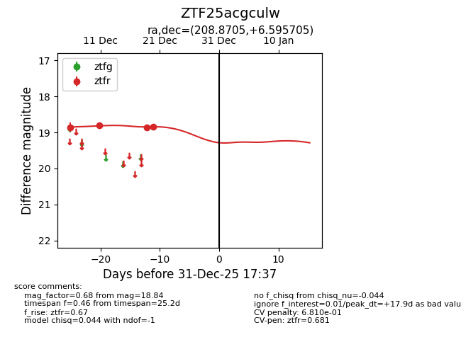
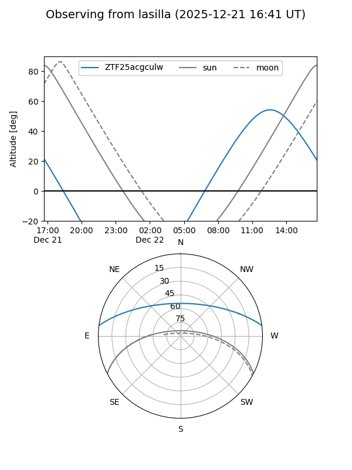
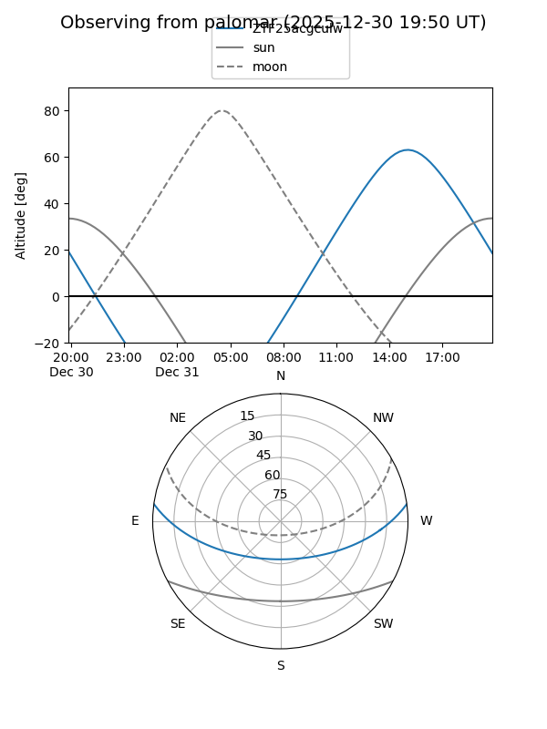
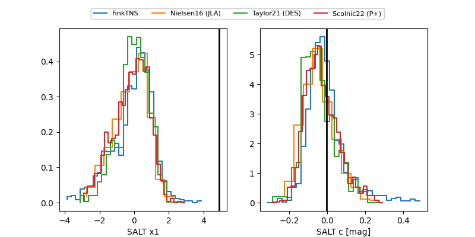

ZTF25acgculw
Target ZTF25acgculw at 2025-12-19 13:42
Aliases and brokers:
FINK: fink-portal.org/ZTF25acgculw
Lasair: lasair-ztf.lsst.ac.uk/objects/ZTF25acgculw
ALeRCE: alerce.online/object/ZTF25acgculw
alt names
ZTF25acgculw (ztf,fink_ztf)
Coordinates:
equatorial (ra, dec) = 208.8705,+6.59571
equatorial (HMS+DMS) = 13:55:28.92,+06:35:44.54
galactic (l, b) = (342.3657,+64.44582)
Flags:
Photometry:
last ztfr=18.86
3 ztfr detections
Lightcurve

Visibility


Additional plots
